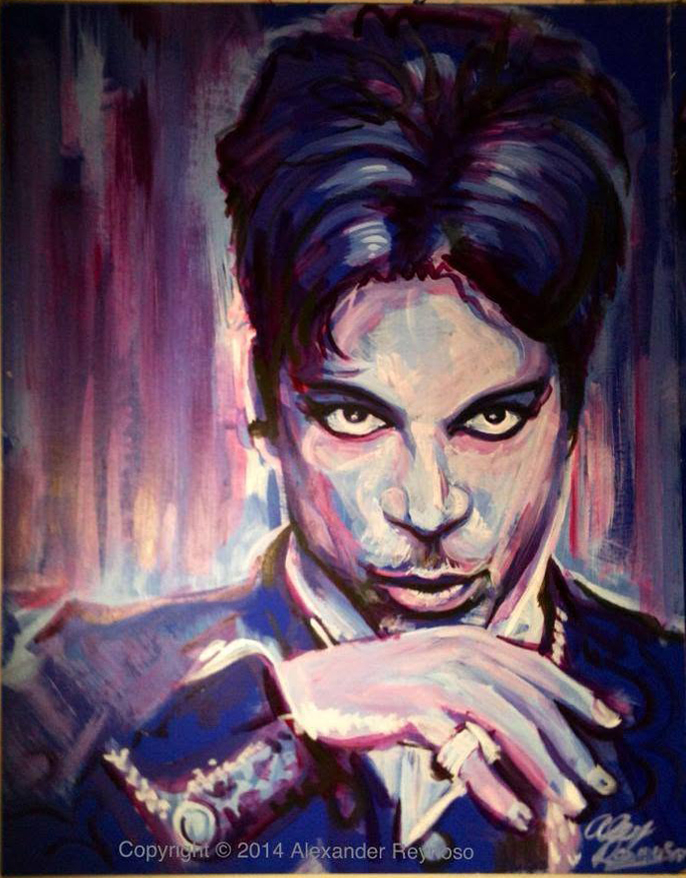

Prince
2014

About the Artwork
Prince was painted live in 2014 during The Collage Movement NYC at Dinner on Ludlow in New York City. Created in acrylic on navy illustration board, the 22 × 28 inch portrait developed in front of a live audience.
The Collage Movement NYC combined art, networking, socializing and entertainment, and became an important part of my development as a live painter. It was where I began creating paintings in front of an audience, bringing the process out of the studio and into a shared public space.